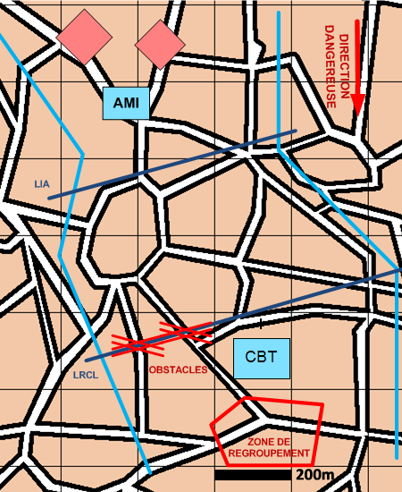

NIVEAU : Automate
ARME : Melee
MISSION : Recueillir
NIVEAU : Automate
ARME : Melee
MISSION : Recueillir
Schéma de modélisationRecueillir Unité |
Paramètres obligatoiresFuseauZone de responsabilité. Direction Dangereuse Orientation privilégiée des capteurs. Zone de regroupement Zone de regroupement pour les unités qui arment la LIA. Ligne d'Identification et d'Accueil [LIA] Ligne sur laquelle les unités légères vont armer les PIAs. Ligne de Recueil [LRCL] Ligne tenue par les unités de mêlée blindées. |
|
Paramètres optionnelsPréparation terrain |
||
 |
Fiches missions |  |